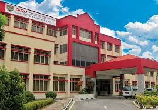
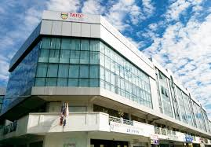

Kuala Lumpur Main Campus
TAR UC Penang Branch
TAR UC Perak Branch
- Auditorium
- Administration Block
- Resource Centre
- Clubhouse with an Olympic-sized swimming pool
- Student Center with canteen facilities
- Hospitality Management Block
- Lecture Halls and Mini Lecture Halls
- Lecture and tutorial blocks
The Perak Branch Campus first began operations on 5 January 1998 at temporary premises of 5 shoplots in Kampar, and relocated to its campus built on a sprawling 50 acres of land. Tucked amidst lush greenery, scenic lakes and located within a growing township, the Perak Branch Campus offers conducive and community-fostering setting which enhances holistic learning.
The purpose built campus is equipped with various facilities and recreational amenities, providing an ideal study environment for all students.

Johor Branch
Pahang Branch
Sabah Branch
The Sabah Branch began operations on 20 May 2002 and is the first and only Branch located in East Malaysia. The Branch is situated in Pusat Dagangan Donggongon, Penampang, Sabah.
Donggongon Penampang is just a 30-minute drive from Kota Kinabalu City and is the gateway to some renowned tourist destinations such as Tambunan Rafflesia Information Centre, Kadazan Dusun Cultural Centre (KDCA), Lok Kawi Wildlife Park, Monsopiad Cultural Village, Kipandi Butterfly Park, the famous Mahua Waterfall at Tambunan and lots more.
Sabah Branch is located in the middle of Donggongon town, where the famous Tamu (Market) is held every Thursday and Friday. Donggongon town is vibrant with lots of shops, shopping malls, banks and even a state library within walking distance, making it a conducive place to live as all the basic amenities is ready available. Bomba, Police station and Pos Malaysia is just few steps from the current faculty branch campus.
Penampang is a booming district with a lot of new developments and constructions, such as the International Technology & Commercial Centre (ITCC), 360 Boulevard, C-Park Condos, malls and condominiums, making Penampang one of the fastest-growing towns after KK City.
The current building is well equipped with modern infrastructure that is sufficient and conducive for students learning environment. Students will enjoy the fast speed wifi/ internet that are ready available throughout the campus and up to date computer software to help in students learning. The Branch campus are committed in providing a well-stocked library, well maintained lecture and tutorial rooms, recreational rooms with gym facilities, and security services for students and staff safety, as well as various extracurricular activities to enhance students campus life experience.
